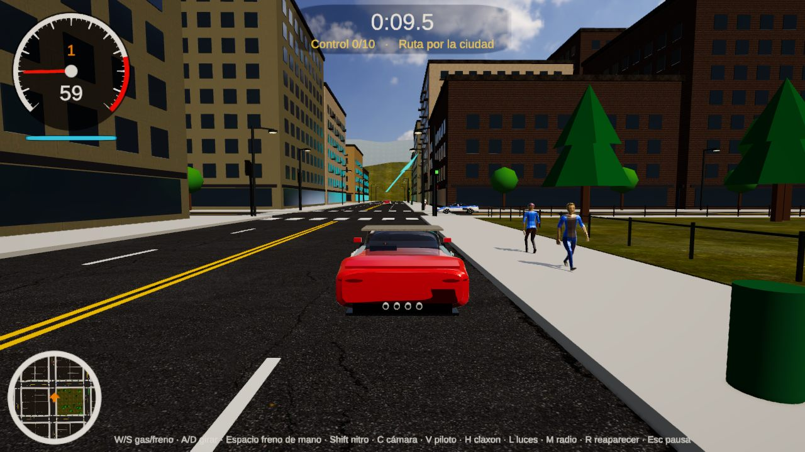
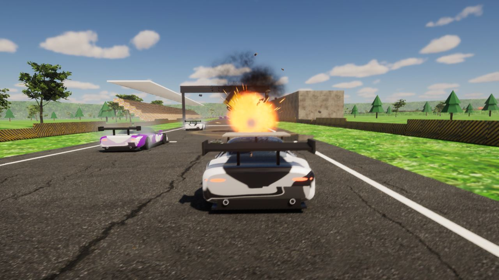
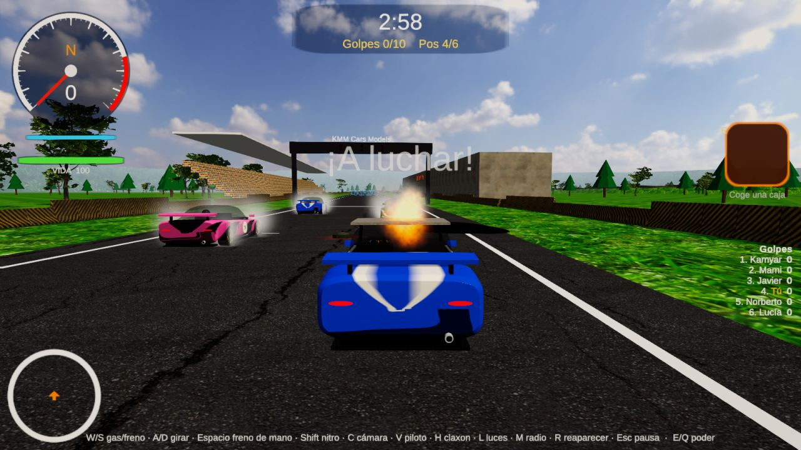
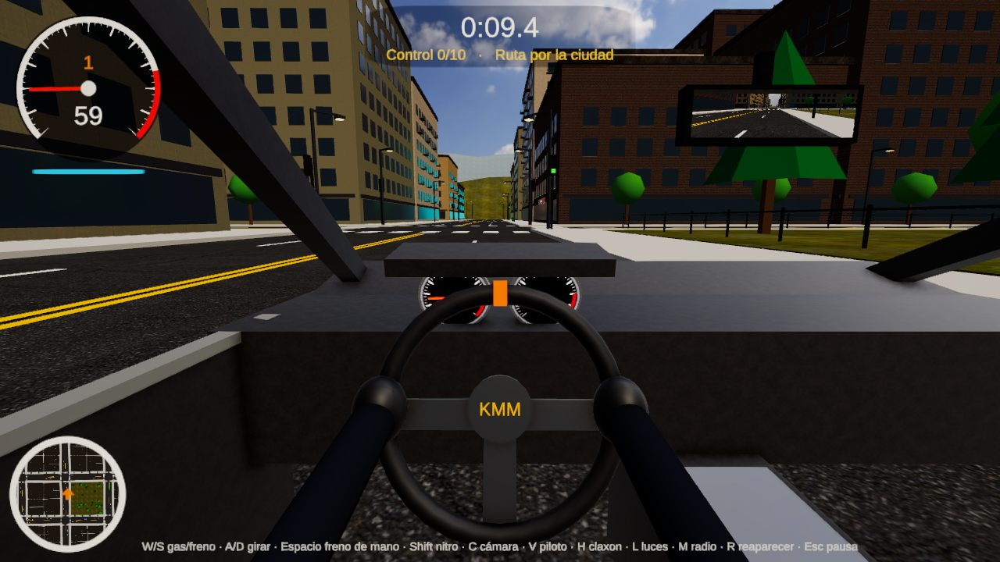
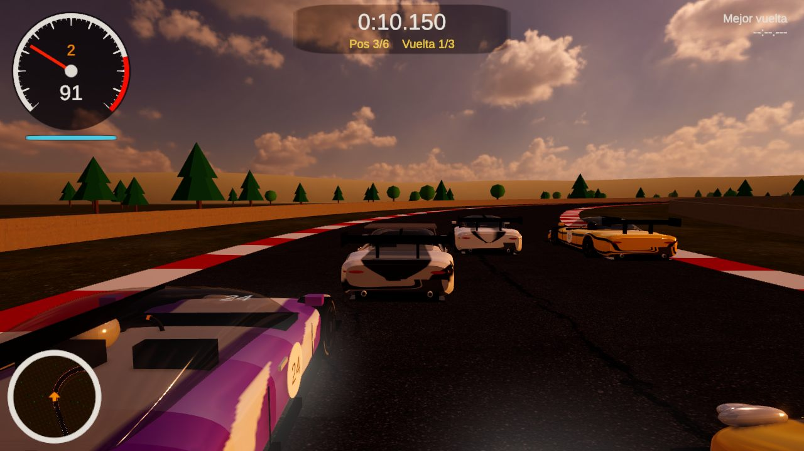
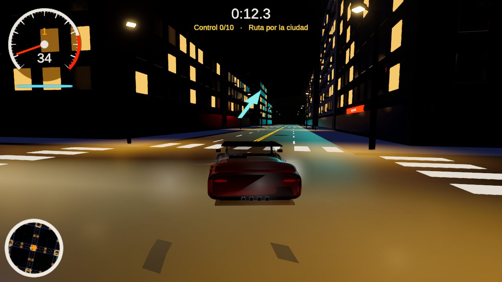

Carreras, ciudad, acrobacias y ¡NUEVO! modo Batalla con misiles y bombas. ¡Funciona con tu volante y tu simulador!

Gratis · 104 MB · Windows 10/11. Abre KMM-Cars-Models-Drive-Setup.exe, pulsa Siguiente → Instalar y tendrás el icono en el Escritorio. Si Windows dice "Windows protegió tu PC", pulsa Más información → Ejecutar de todas formas. Versión .zip
Coge las cajas ? y lanza misiles, bombas, cohetes, nitro, escudo, aceite y EMP contra 5 rivales. ¡Gana quien haga 10 golpes!
3 circuitos, 5 coches rivales y semáforo de salida.
Ciudad con tráfico y peatones, autopista entre colinas y carretera de costa.
Rampas, loop, half-pipe y anillos.
Envía el movimiento como Assetto Corsa. En el programa de tu simulador elige Assetto Corsa.





W/S gas/freno · A/D girar · Espacio freno de mano · Shift nitro · C cámara · V vista piloto · E/Q usar poder · R reaparecer · Esc pausa. Mando, volante y pedales: Ajustes → Calibrar volante.
📱 Android: descargar APK.